In this Quickstart, we will investigate how to use the Snowflake Connector for Google Analytics Raw Data to emulate data ingestion from Google Analytics to BigQuery into Snowflake.
What You Will Build
- A BigQuery dataset with Google Analytics data.
- A Streamlit application to visualize the data.
What You Will Learn
You will learn how to:
- Create a Google Analytics Project.
- Create a BigQuery dataset.
- Install and configure the Snowflake Connector for Google Analytics Raw Data.
- Visualize the BigQuery data in a Streamlit application.
Prerequisites
- A Google Account to access Google Analytics and BigQuery.
- Familiarity with basic Python and SQL.
- Familiarity with data science notebooks.
- Go to the Snowflake sign-up page and register for a free account. After registration, you will receive an email containing a link that will take you to Snowflake, where you can sign in.
Overview
You will use Snowsight, the Snowflake web interface to create Snowflake objects (warehouse, database, schema, role).
Creating Objects and Loading Data
- Navigate to Worksheets, click
+in the top-right corner to create a new Worksheet, and choose SQL Worksheet. - Copy and paste the setup script code to create Snowflake objects (warehouse, database, schema) and click Run All at the top of the Worksheet.
Overview
In this section, we will create a Google Analytics Account and Property in Google Analytics.
Create Account
- To create an Account, navigate to Google Analytics and click on Start measuring.

- Enter an account name such as Snowflake Connector Account and click Next.
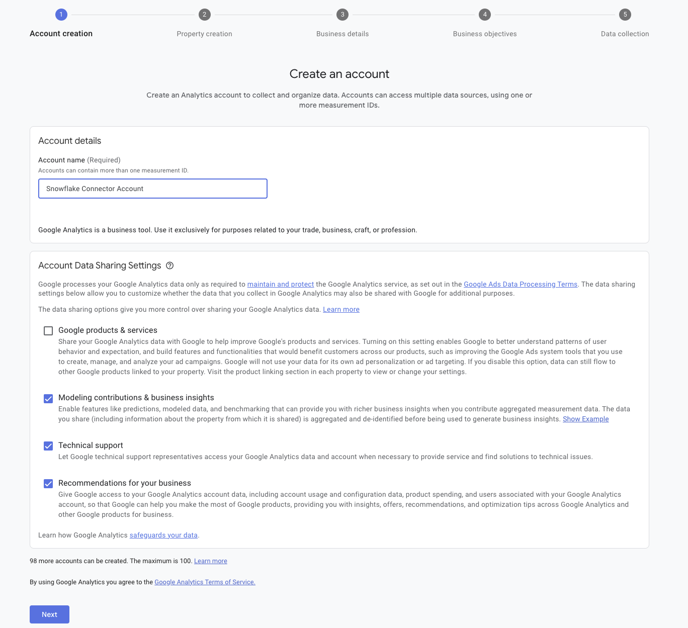
- Enter the Property Name as Snowflake Connector Property and click Next.
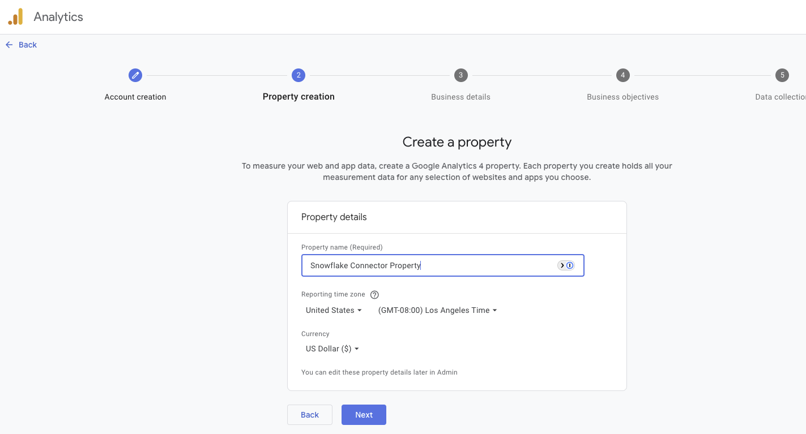
- Select the industry category and business size and click Next.

- Select the business objectives and click Create.

- Accept the terms and conditions and click I Accept.

Overview
In this section, we will create a BigQuery dataset and table to store Google Analytics data.
Create a BigQuery Project
- Navigate to Google Cloud Console and click on Create or select a project button to create a new project.
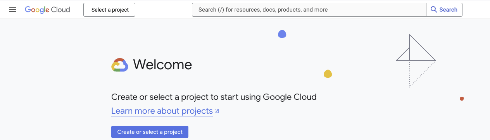
- Select New Project then No organization and click Create.

- In the popup notification window on the top right, click SELECT PROJECT.
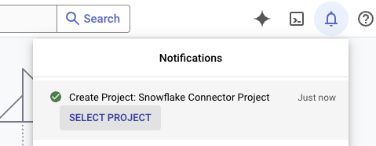
- The page will automatically load to the new project. Hover over the left sidebar to expand it and in the Resources section, click on BigQuery.
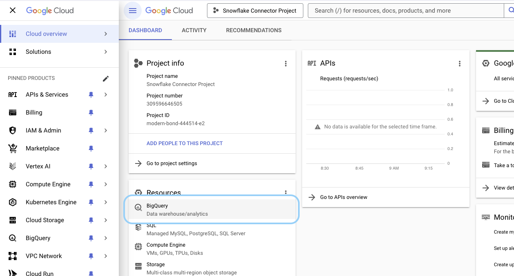
- In the Explorer, enter
bigquery-in the Search BigQuery resources box and toggle to Search all projects. Click on the star next tobigquery-public-datato star the dataset.

- Click X in the Search BigQuery resources to view your project and the starred project.

- Expand the bigquery-public-data dataset to view the datasets.

- Scroll down to find and expand the
ga4_obfuscated_sample_ecommercedataset and select the only table that's in this dataset. It should start withevents_. ClickCOPY.
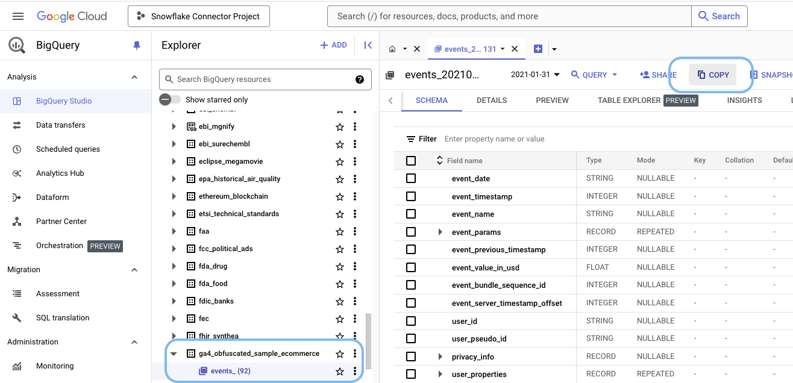
- Select BROWSE.

- Select the project that was created earlier, Snowflake Connector Project in this example.

- After clicking on the project, the Dataset and Table fields will be blank.

- Click on the Dataset field and select CREATE NEW DATASET in the dropdown.

- Enter
analytics_20210131and click CREATE DATASET.

- Click on the Table field and enter
events_20210131for the table name and click COPY.

- Click GO TO TABLE on the toast that appears on the bottom of the page.

- View the table by clicking PREVIEW.
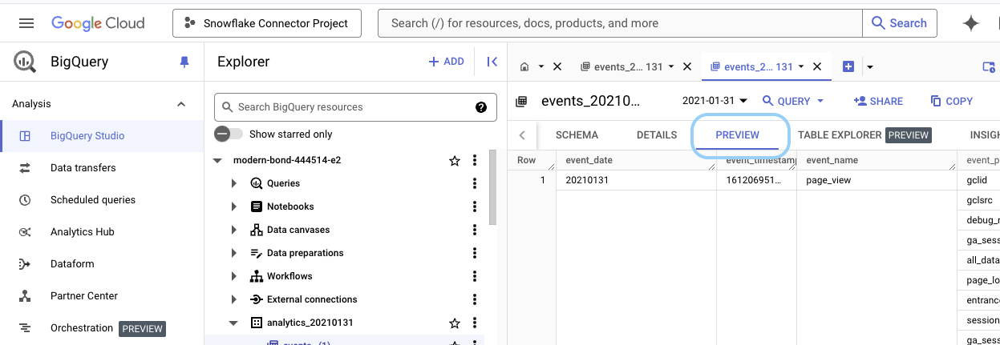
Overview
In this section, we will link Google Analytics to BigQuery.
Link Google Analytics to BigQuery
- Navigate to Google Analytics and enter BigQuery Links in the search bar and select BigQuery Links.

- Click the Link button.

- Click on the Choose a BigQuery project button.
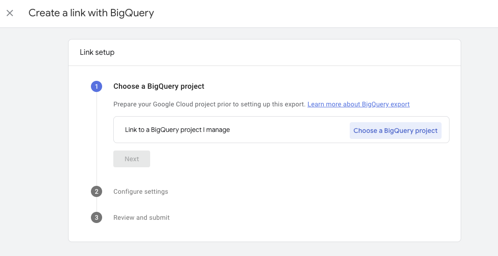
- Select the BigQuery Project and click Confirm.
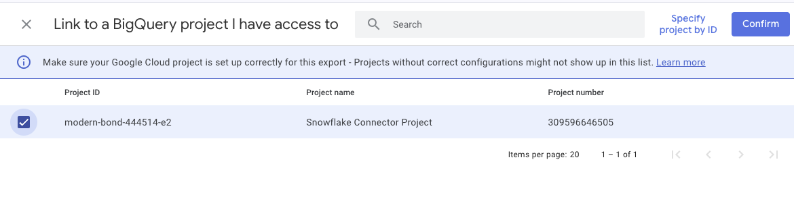
- Click Next and select Include advertising identifiers for mobile app streams, Streaming (best-effort), and Daily. Click Next again.

- Click Submit.

- A new link is created.

Overview
In this step, we will configure the OAuth Consent Screen.
Create Service Account Key
- Navigate back to BigQuery and hover over the left sidebar to expand it and click on APIs & Services then Credentials.

- Click on Create Credentials and select Service account.

- Enter a Service account name such as Connector Service Account and click CREATE AND CONTINUE.

- Add all 3 of these roles one at a time by clicking on the dropdown list to select a role, and then click + ADD ANOTHER ROLE to add the next role then click DONE: BigQuery Data Viewer, BigQuery Read Session User and BigQuery Job User.
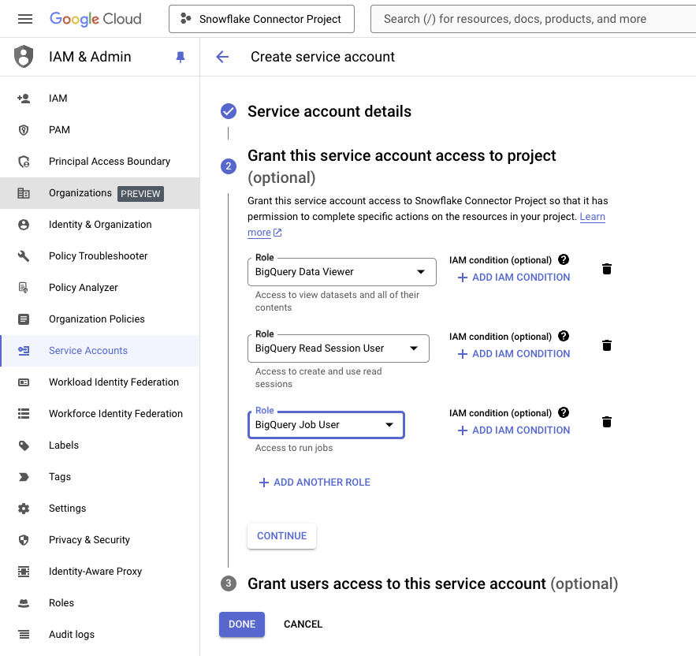
- Click on the newly created service account and click on ADD KEY then Create new key.


- Select JSON and click CREATE.

- The JSON key file will be downloaded to your computer.

Overview
In this section, we will configure the OAuth Consent Screen.
Configure OAuth Consent Screen
- Hover over the left sidebar to expand it and click on APIs & Services then OAuth consent screen.

- Select External and click CREATE.
- Note if you have the GO TO NEW EXPERIENCE button, click the button to proceed to the next step.

- Navigate to Clients and click on GET STARTED.

- Enter the App name as Snowflake Connector for Google Analytics Raw Data and click NEXT.

- Click External and then NEXT.

- Enter an email address (preferably the same one entered for the User Support Email) and click NEXT.

- Select to Agree and click CONTINUE.
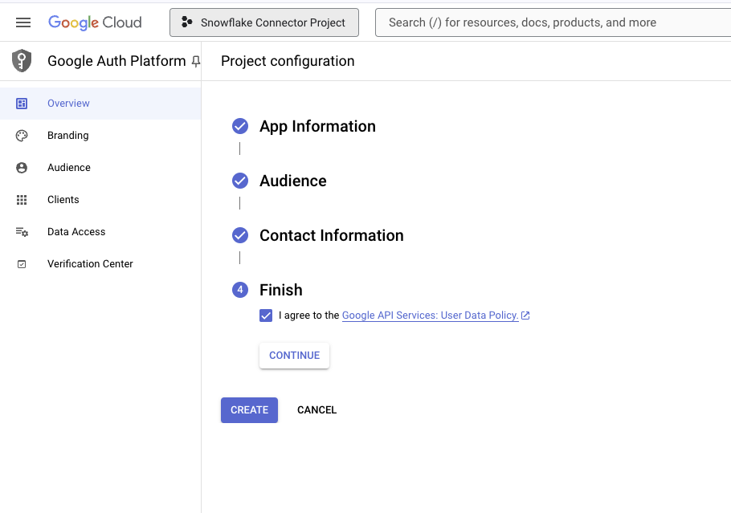
- Click CREATE.

Overview
In this section, we will enable the Cloud Resource Manager API.
Cloud Resource Manager API
- Inside BigQuery, enter Cloud Resource Manager API in the search bar and click on Cloud Resource Manager API.

- Click ENABLE.

Overview
In this section, we will install and configure the Snowflake Connector for Google Analytics Raw Data.
Clean Up Script
- Navigate to the Snowflake Marketplace and type in Snowflake Connector for Google Analytics Raw Data and click on the Connector.

- Click GET and then GET to install the Connector.

- Click Configure.

- Click Mark all as done and then click Start configuration.

- Click Configure.
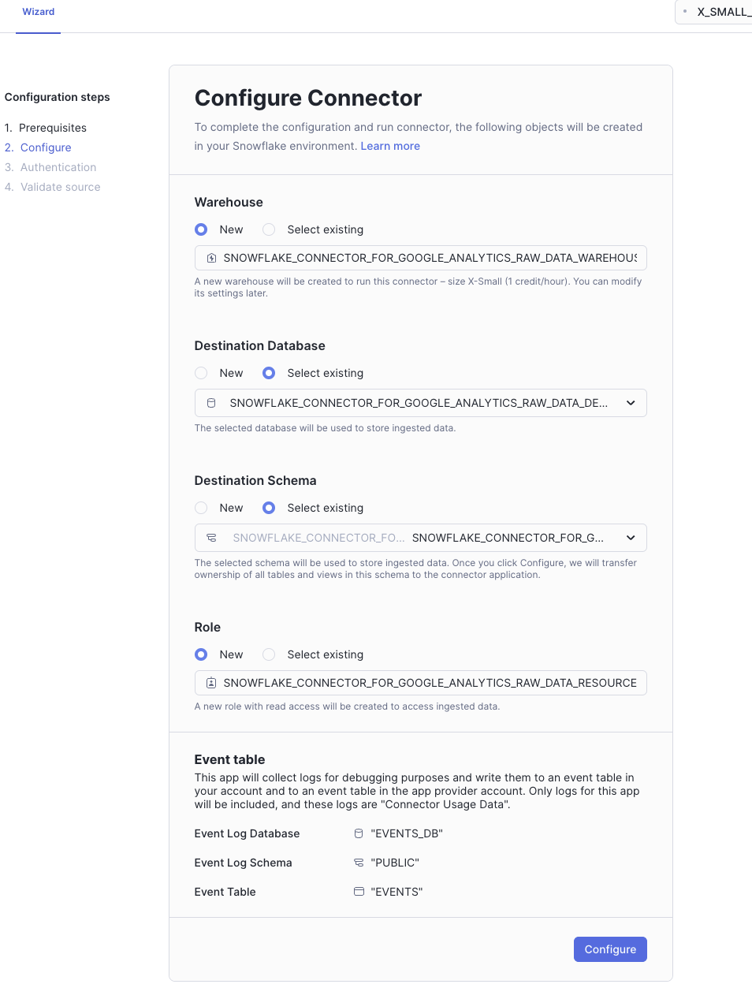
- Upload the JSON file that was previously downloaded and upload it to this page and click Connect.

- Click Define data to sync.

- Select the data to sync and click Start sync.

- When the data is syncing, the UI will indicate with Last sync: x minutes ago.
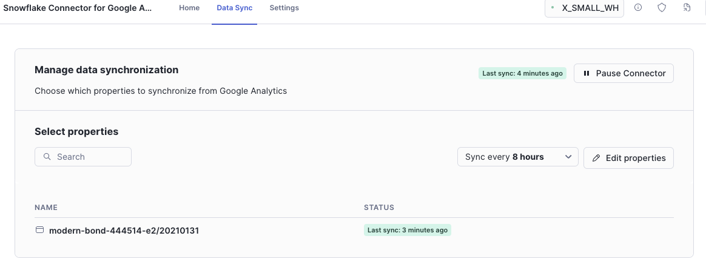
Overview
In this section, we will create a Snowflake Notebook to view the data: both the raw un-flattened and flattened data.
Create a Snowflake Notebook
- Download the Snowflake Notebook
- Navigate to Snowsight, make sure you're using the ACCOUNTADMIN role and go to Projects and Notebooks.
- Click on the dropdown arrow portion of the
+ Notebookbutton. - Click on
Import .ipynb file. - A popup window will appear to upload the Notebook file.
- In the Name section, name the Notebook, select GOOGLE_ANALYTICS for the database and RAW_DATA for the schema.
- Select GOOGLE_ANALYTICS_DS_WH for the warehouse.
- Click Create.
- Click Run all to run the Notebook.
Overview
In this section, we will create a Streamlit application to visualize the data.
Visualize Data
- Copy the Streamlit code.
- Navigate to Snowsight, make sure you're using the ACCOUNTADMIN role and go to Projects and Streamlit.
- Click on the
+ Streamlit Appbutton. - In the App title section, name the app, select GOOGLE_ANALYTICS for the database and RAW_DATA for the schema.
- Select GOOGLE_ANALYTICS_DS_WH for the warehouse.
- Paste in the Streamlit code into the code editor and click Run.
Overview
When you're finished with this Quickstart, you can clean up the objects created in Snowflake.
Clean Up Script
Navigate to the last cell in the Snowflake Notebook labeled clean_up to uncomment and run it to drop all objects created in this Quickstart.
Congrats! You're reached the end of this Quickstart!
What You Learned
With the completion of this Quickstart, you have learned how to:
- Use the Snowflake Connector for Google Analytics Raw Data to ingest data from Google Analytics/BigQuery into Snowflake.
- Visualize the data in a Streamlit application.